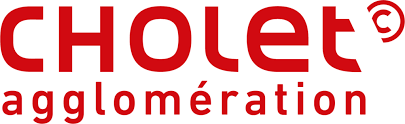

J'ai intégré Graphic Packaging International pour effectuer un emploi saisonnier en tant que copiste au sein du service pré-presse de Juillet 2024 à Août 2024.
Graphic Packaging international est une entreprise reconnue dans la fabrication de solutions d'emballage en carton de tout type, comme l'alimentaire, les produits cosmétiques, les produits pour les animaux, les soins de santé et les articles ménagers.
L'entreprise se focalise sur des solutions d'emballages innovantes en termes de design, mais aussi respectueuses de l'environnement.
J'ai tout d'abord dévéloppé de la rigueur et un sens du détail car le moindre détail pouvait impacter la production.
J'ai renforcé mes compétences en communication orale et des capacités de travail en équipe, puisque je travaillais en étroite collaboration avec le service impression. Tous les matins, une réunion se produisait dans mon service afin de partager les informations, suivre l'avancement de chacun et parler de ses points bloquants.
Enfin, cette expérience m'a permis de prendre plus de responsabilités. Pendant 3 semaines, j'ai été seul à mon poste pour la production de plaques en aluminium, ce qui m'a permis d'être autonome, d'apprendre à gérer mon temps et de gérer mon stress.
Cette expérience en tant que copiste chez Graphic Packaging International m'a offert un mélange de compétences techniques et organisationnelles. Elle m'a permis de développer dans un domaine hautement réglementé, tout en cultivant une attention exceptionnelle aux détails, la gestion du temps, et des aptitudes de collaboration. Ces compétences sont utilisables dans le domaine de l'informatique où la qualité du produit final dépend de l'exactitude de la communication et du respect des normes.
Dans le cadre de ma 2ème année de BTS, j'ai effectué un stage à Cholet Agglomération dans le service télécommunication, systèmes et réseaux.
Cholet Agglomération est une communauté d'agglomération située autour de la ville de Cholet, composée de 26 communes.
Cette communauté d'agglomération possède un parc informatique d'environ 2000 postes informatique.
Lors de la période de mon stage, le service que j'avais intégré avait pour projet de cloisonner le réseau interne avec plusieurs mécanismes de sécurité. Étant donné que ce n'était que le début de ce projet, je n'ai pas pu contribuer grandement au projet.

Le but principal de ce stage était d'observer la mise en place du cloisonnement interne du réseau. Ce qui m'a permis de comprendre les enjeux de vouloir mettre en place des solutions de sécurité robuste, mais aussi les difficultés d'intégration d'une solution, car lors du déploiement de la solution de pare-feu, certains trafics étaient bloqués alors qu'il ne deviez pas l'être. Ce projet nécessitait donc une grande préparation préalable.
Les tâches que j'ai effectuées étaient :
Lors de ce stage, j'ai développé mon autonomie et mobilisé ma curiosité, car j'ai passé beaucoup de mon temps à m'informer des réglementations et des normes orientés vers la sécurité des systèmes d'information.
Enfin, j'ai mis en oeuvre mes connaissances en réseaux afin de configurer des équipements.
Ce stage m'a permis de conforter mon choix de m'orienter dans la cybersécurité, j'ai pu observer quelle importance elle pouvait avoir dans l'entreprise. Le fait d'avoir développé ma curiosité, est un facteur clé dans ce domaine, où il est impératif de mener une veille technologique constante lié à l'évolution rapide des technologies.
Pour toute information supplémentaire, n'hésitez pas à me contacter via l'adresse email suivante :
damien.ly03@gmail.com